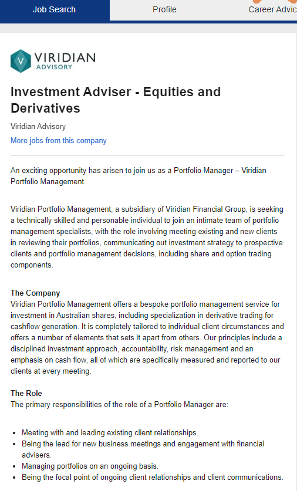

|
Investment Adviser - Equities and Derivatives
My aspirations lie within the wealth management industry, mainly as a result of my desire to succeed – using numbers. I am developing my background to prepare for the future to be able to recognise investment opportunities within any industry, to be able to have access to the best choices in the first place. Below is an accurate representation of the role I would love to fill:
Investment Adviser - Equities and Derivatives
It is a role with Viridian Advisory, and represents a somewhat accurate representation of a role I would like to fill the shoes of one day, if not today. I’d like to develop my skills to fill the a role with more responsibility; however, I do understand the necessity of patience by learning. The responsibilities of the image of the job listing are all helpful towards experience, and developing the social culture needed to be integral to a successful working environment.

Skills, qualifications and experience required for the position
In order to be a qualified adviser regarding financial markets, RG146 is needed. This can be complete by finishing an Undergraduate degree such as Financial Planning at RMIT. In order to be a qualified Actuary, a series of examinations split across three parts of study is needed. It is a lengthy process and requires Part 3 to be complete in order to be a qualified Fellow recognised by the Institute of Actuarial Studies.
Skills, qualifications and experience you currently have
Currently, I am in my second last round of subjects for the Bachelor of Business (Financial Planning) at RMIT. Additionally, I have complete a few Actuarial exemptions under Part 1 and I am completing the remainder at the upcoming exams in April.
|